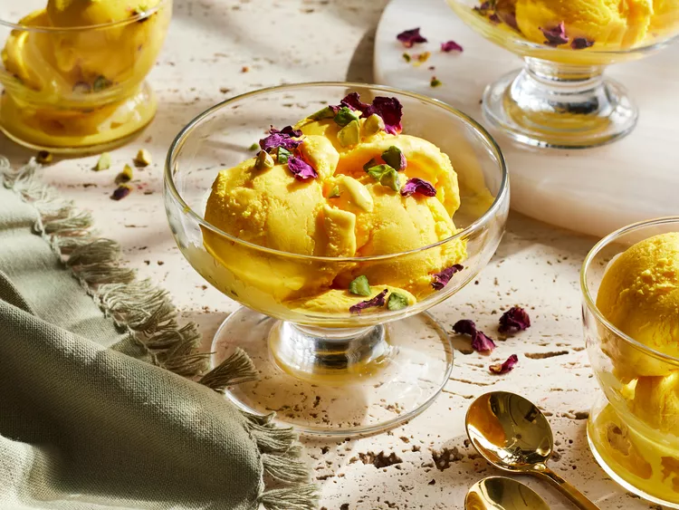

Back To Home
Bastani

Description
Bastani is flavored with rose water, the key to this vibrant and delicious saffron and rose ice cream. Rose water has a strong flavor, so start with 2 tablespoons if you want a more delicate floral note.
Ingredients
- 5 large egg yolks
- 1/2 cup white sugar
- 5 1/2 cups whole milk
- 2 to 4 tablespoons rose water
- 1 teaspoon vanilla extract
- 1/2 teaspoon saffron threads, crushed to a powder
- 1 1/2 cups whipping cream
- 1/3 cup chopped raw, unsalted pistachios (optional), plus more for garnish
- dried rose petals, for garnish
Steps
- Whisk together egg yolks and sugar in a medium bowl until thick and pale yellow, 1 to 2 minutes.
- Warm the milk, rose water, and vanilla in a medium saucepan over medium heat just until mixture lightly simmers. Gradually pour milk mixture into yolk mixture, whisking constantly.
- Return mixture to saucepan and cook over medium-low heat, stirring constantly, until an instant-read thermometer registers 170 degrees F (77 degrees C) and mixture is thick enough to coat the back of a spoon, 5 to 8 minutes. Remove from heat. Add saffron, stirring until mixture takes on a deep-yellow color, about 1 minute. Stir in whipping cream. Cover surface with plastic wrap; chill at least 8 hours or up to 24 hours.
- Churn mixture in an ice cream maker according to manufacturer’s directions until it reaches the texture of soft-serve ice cream. Add pistachios (if using) during the last few minutes of churning.
- Transfer to a freezer-safe container, cover surface with parchment paper, and freeze until firm, at least 4 hours.
- Scoop into bowls. Garnish with pistachios and rose petals. (Freeze in an airtight container up to 1 week.)